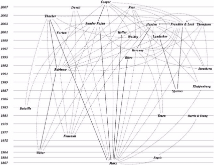

36
Species of Biocapital, 2008, and Speciating
Biocapital, 2017
Stefan Helmreich and Nicole Labruto

S. Helmreich (*) N. Labruto Massachusetts Institute of Technology, Cambridge, MA, USA
' e Author(s) 2018 851
M. Meloni et al. (eds.), e Palgrave Handbook of Biology and Society, https://doi.org/10.1057/978-1-137-52879-7_36
36 Species of Biocapital, 2008, and Speciating Biocapital, 2017 PAGE879
could also manifest as a table of exchanges between different coinages. I con- sider all these possibilities here.
What is biocapital? Scholarship in the social study of biology has suggested that in the age of biotechnology, when the substances and promises of biologi- cal materials, particularly stem cells and genomes, are increasingly inserted into projects of product-making and -seeking, we witness the rise of a novel kind of capital: biocapital. e term, paging back to Marx, fixes attention on the dynamics of labor and commoditization that characterize the making and marketing of such entities as industrial and pharmaceutical bioproducts. It gives a fresh name to a phenomenon that Edward Yoxen, writing at the dawn of the biotech revolution in Life as a productive force: capitalizing upon research in molecular biology , described as not simply a way of using living things that can be traced back to the Neolithic origins of fermentation and agriculture but a technology controlled by capital, a specific mode of the appropriation of living nature literally capitalizing life (1981, p. 112). Biocapital also extends Foucault s biopolitics, that practice of governance that brought life and its mechanisms into the realm of explicit calculations (Foucault 1978, p. 143). eorists of biocapital posit that such calculations no longer organize only state, national, or colonial governance but also increasingly format economic enterprises that take as their object the creation, from biotic material and information to value, markets, wealth, and profit. e biological entities that inhabit this landscape are also no longer only indi - viduals and populations the twin poles of Foucault s biopower but also cells, molecules, genomes, and genes.
Stem cells have been potent objects on this landscape because of their, well, potency or better, their potential potency, their capacity, under finely tuned circumstances, to grow into diverse sorts of cells, cells that might be employed as resources for regenerative medicine. One might argue that stem cells are animated by a double fetishism infused with vitality because of the erasure of the labor and regulation that allows them to appear in themselves in such places as laboratories and simultaneously imbued with life because of their origin in living things. Whether such fetishism dovetails with commod- ity fetishism is a complicated question certainly stem cells relation to mar - ket, gift, and national economics and imaginaries is multiple but one of the more general claims of the present chapter will be that biological potency as such, in biocommerce, is often (mis)taken to be a primordial ontology upon which biocapitalism merely elaborates.
2007 e Politics of Life Itself: Biomedicine, Power, and Subjectivity in the
Twenty-First Century (Princeton) each propose a diagnosis of scientific, ethi- cal, and cultural transformations in the way we think of life biological and social in the era of capitalized molecular biology, biotechnology, and stem cell and genomic medicine.
Sunder Rajan s Biocapital argues that life science commodities for example, therapeutic molecules, genome sequences, and pharmaceuticals that promise future health require analysis of capitalist practices as well as of the correlated citizen, corporate, and scientific subjectivities materializing alongside such activ- ities. University and corporate biosciences have become porous to one another, with the circulation of biomaterials between labs governed by novel regimes of buying and selling regimes set in place by regulatory transformations permit - ting the holding of intellectual property in biological matter and knowledge. Contouring this landscape, too, are infusions into genomics of money from venture capital. Speculative finance mirrors the speculations of biotechnology. e subjectivities in the making for scientists, doctors, and patient advocacy groups also tune to future-looking financescapes. e biocapitalist ethos takes nationally particular forms, too. US rhetoric organizes around sentiments of salvation, seeing the promise of genetic medicine in millennial terms, powered by languages of hope and hype; Weber s e Protestant Ethic and the Spirit of Capitalism ([2001 [](#page25_x50.00_y179.14)1[905]) ](#page25_x50.00_y179.14)is the key intertext here. In India, a narrative that highlights the importance to the nation of biotechnology prevails; bioproducts promise to make India a global player . Biocapital also depends on older, colo- nial structures of subordination as well as on new logics, requiring examination of where value resides as biology becomes an information science (p. 41). Sunder Rajan thus tracks permutations in the explicit calculations about life and its mechanisms that Foucault saw as key to biopower.
In e Politics of Life Itself, Rose explores how novel forms of personhood, citizenship, race, brain/mind, and crime are under construction as people posi- tion themselves in relation to technologies of genetic mapping, genetic diagno- sis, genetic counseling, genetic therapy, and genetic profiling. Contemporary biopolitics operates at the level of the molecular and from that seat organizes landscapes of risk and ethical subjectification. Family, personhood, race, and crime are refigured as the stuff of biology is made malleable. Rose concludes e Politics of Life Itself with a meditation on e Spirit of Biocapitalism , detecting
an elective affinity between the new molecular bioeconomics of life itself and the modes through which, for example, doctors and patients work on human corporeal being, a corporeal being increasingly fungible and multiple.
Sunder Rajan and Rose have not been alone in their analyses. Below, to make sense of the genesis of discussions of biocapital is a timeline of publica- tions, starting with Marx:
1867
Karl Marx in Capital defines use value and exchange value as, respectively, the
value of things in use and the value that things acquire when set against one another as commodities. For Marx (who inherited these terms from Aristotle, Luther, and Smith), use value could be natural or conventional, though Marx sometimes described nature materialized in such sub - stances as cultivated soil or the human body as containing means of pro - duction already produced (quoted in Franklin 2007, p. 106). is framing posits generativity (or reproductivity) as an elemental property of the natural.1
1884
Frederick Engels in e Origin of the Family, Private Property, and the State
theorizes a distinction between means of production and means of repro- duction, suggesting that women s subjection in marriage is aided by their domination as a class of unpaid workers responsible for the material repro- duction of persons in households.
1905
Max Weber in e Protestant Ethic and the Spirit of Capitalism suggests that in
post-Reformation Europe, Calvinist ethics of hard work and rationality underwrote the assignation of moral meaning to capital accumulation, which could be read by believers as a secular sign of salvation for which they were already predestined.
1976
Michel Foucault in e History of Sexuality, Vol. 1, theorizes biopower as that
which made it possible for nation-states to bring life and its mechanisms into the realm of explicit calculations , that is, to summon forth the bodies of individuals and populations as elements to be governed and managed in the service of such social imperatives as nation-building and colonial expansion.
1981
Feminist scholars Olivia Harris and Kate Young, commenting on Engels in
1981
Marxist scholar Edward Yoxen publishes Life as a productive force: capital-
izing upon research in molecular biology , in which he argues that a shift in the appropriation of living nature takes place when capital begins to oper- ate on biotic stuff at the molecular level.
1987
Literary critic Hortense Spillers (1987) in Mama s baby, papa s maybe exam-
ines how the reproductive capacity of slaves under chattel slavery in the antebellum American South was conscripted by slaveholders into produc- ing more slaves as property and as potential capital.
1988
Rural sociologist Jack Kloppenburg (1988), in First the Seed: e Political
Economy of Plant Biotechnology, 1492 2000, offers a history of the capital- ization of plant matter.
1992
Anthropologist Paul Rabinow in Artificiality and enlightenment coins the
term biosociality, arguing that genetics, immunology, and environmental - ism are leading vehicles for the infiltration of technoscience, capitalism, and culture into what the moderns called nature (1992, p. 245).
1992
Anthropologist Marilyn Strathern in After Nature (1992a) and Reproducing
the Future (1992b) describes biological substance modified and capitalized as nature, enterprised-up .
1993
Ecologist Walter V. Reid (1993) publishes Bioprospecting: a force for sustain-
able development in Environmental Science and Technology. e term, a compression of biodiversity prospecting , refers to scouting in natural set- tings (e.g. rainforests) for biological material (e.g. from plants) or informa- tion (e.g. traditional or indigenous knowledge) that may provide leads for natural products that can be industrialized or commercialized.
1995
Historian Harriet Ritvo (1995) in Possessing Mother Nature offers a history
of the remaking of livestock breeding in eighteenth-century Britain, when curated pedigrees emerged as tools to establish markets in what she terms genetic capital (see also Derry 2003 on the profit motive in breeding cattle, dogs, and horses beginning in 1800).
1997
In Modest_Witness@Second_Millennium, the historian of biology Donna
Haraway (1997) discusses a shift from kind to brand in the taxonomy of living things in the days of biotechnology. OncoMouse is an exemplar of the new branded biology.
1997
Physicist and critic of development Vandana Shiva (1997) publishes Biopiracy:
yses of bioprospecting that construe the activity as a neocolonial practice of resource extraction, in which wealthy nations or companies dispossess poorer nations or people of their territorial, organic, or ethnobotanical inheritances, often at profit.
2000
Historian Hannah Landecker (2000), in Immortality, in vitro , examines the
case of the immortalized cancer cells of Henrietta Lacks, showing how they were serially imagined as valuable as the gift to science of an unknown woman, as the property of science, and, when they were discovered to orig- inate in the body of a black woman, as two things: by some scientists, in line with racist visions of black sexuality, as hyperfecund, and by Lacks s family and advocates as a sign of an historical and continuing dispossession in the United States of black women from their bodies as property. Landecker made early versions of this argument in Between beneficence and chattel: the human biological in law and science (1999).
2000
Medical sociologist Catherine Waldby coins the term biovalue, generated
wherever the generative and transformative productivity of living entities can be instrumentalized along lines which make them useful for human projects (2000, p. 33).
2001
Anthropologist Chaia Heller (2001) in McDonalds, MTV, and Monsanto:
resisting biotechnology in the age of informational capital theorizes bio- technology as a mode of production , argues that scholars might name a new moment in capitalism, the organic phase of capitalism, in which capital targets the reproductive dimensions of cultural and biological life as loci for intensified production and commodification .
2001
Science studies scholar Mike Fortun (2001) in Mediated speculations in the
genomics futures markets suggests that understanding the business of genomics requires attention to its speculative logic, which he examines by demonstrating the role of forward-looking statements in generating investment and profit. is work elaborates his earlier interest in the rheto - ric of speed in genomics (1999) and sets the stage for his 2002 argument that genomics operates in the future anterior , the what-will-have-been
the promise an argument he will elaborate in Promising Genomics: Iceland
and deCODE Genetics in a World of Speculation (2008).
2001
Anthropologist Margaret Lock s e alienation of body tissue and the bio -
politics of immortalized cell lines (2001) fuses political economic analysis with Foucauldian attention to body politics.
2001
Sociologist Nikolas Rose argues that new markets in health create a circum-
stance in which biopolitics becomes bioeconomics (2001, p. 15).
2003
Anthropologists Sarah Franklin and Margaret Lock define biocapital as a kind
of wealth that depends upon a form of extraction that involves isolating and mobilizing the primary reproductive agency of specific body parts, particularly cells, in a manner not dissimilar to that by which, as Marx described it, soil plays the principal role in agriculture (2003, p. 8). Franklin and Lock understand this biocapital to be underwritten not only by production but also by reproduction. eir thinking emerges from a May 2000 conference at the School of American Research, which they recall thus: Imagining ourselves (re)writing volume 1 of (bio)Capital, we attempted to specify as precisely as possible the range of forces at work in the transformation of life and death into means to (re)production and, in turn, into component parts that together compose an emergent global bio- logical economy (p. 13). Franklin s contribution to Remaking Life and Death: Toward an Anthropology of the Biosciences, the volume that emerged from this workshop, was entitled Ethical biocapital .
2003
Sociologist Charis ompson argues that the biotech mode of (re)production
operates with promissory capital , capital raised for speculative ventures on the strength of promised future returns (quoted in Franklin and Lock 2003, pp. 6 7). In her Making Parents: e Ontological Choreography of Reproductive Technologies, ompson turns her attention to what she calls
the biomedical mode of reproduction (2005).
2003
Science studies scholar Kaushik Sunder Rajan in Genomic capital: public
cultures and market logics of corporate biotechnology defines biocapitalism as that which asks, how life gets redefined through the contradictory processes of commodification (2003, p. 87). His biocapitalism has five fea- tures: a rhetoric of speed, corporate/university connections, porosity between commodity and gift economies in labs, excessive production, and biosocialities tuned to market logics.
2003
Anthropologist Cori Hayden in When Nature Goes Public: e Making and
Unmaking of Bioprospecting in Mexico shows how bioprospectors often seek
to create capital through channeling biodiversity through slightly choppy (2003, p. 10) networks that mix economies of purchase, benefit-sharing, dispossession, profit, and promise, many of which turn out to be situated in larger frames of North-South political economic inequality.
2005
Literary theorist Eugene acker in e Global Genome (2005) fixes on how
the fluidity of genetic information as data permits it to be used as a cur- rency in globalization. acker draws on the Marx of the Grundrisse as well
as on Foucault to develop a theory of biological exchange that aligns information management with moments in the movement of capital: encoding/production, recoding/circulation, and decoding/consumption. acker thinks through the excess of bio-information using the work of Georges Bataille (1967) in e Accursed Share, which argues that the accu- mulation of surplus is not always fed back into production, but is often spectacularly spent on lavish wastage.
2006
Kaushik Sunder Rajan in Biocapital: e Constitution of Postgenomic Life fol-
lows Marx in parsing biocapital into industrial, commodity capital (such as therapeutic molecules) and speculative, commercial capital (such as stocks), which later are often underwritten by quasi-religious sentiment, in the way Weber argued that the rise of merchant capital was motored by the Protestant ethic. Sunder Rajan uses Bataille to think about how speculation underwrites and permits practices of excess, particularly in the over-the-top expenditures of biotechnology start-ups in the United States.
2006
Anthropologists Adriana Petryna, Andrew Lakoff, and Arthur Kleinman in
Global Pharmaceuticals: Ethics, Markets, Practices (2006) examine the inequalities that organize world distribution and markets in pharmaceuti - cals, a global economy in which access and excess are often inversely related. ey draw on Bourdieu s notion of capital to locate pharmaceutical econo - mies of patents, products, and promises in regimes of economic, cul - tural, material, and symbolic capital. ey do not put the package together
as biocapital though Lakoff argues that in pharmacogenomics, Biopolitics and the market were to be brought together through the application of genomic knowledge (2005, p. 171).
2007
Nikolas Rose extends earlier arguments of his that a mutation from biopolitics to
bioeconomics characterizes the dominant social order in at least the United States and Europe, writing that vitality has been decomposed into a series of distinct and discrete objects, that can be stabilized, frozen, banked, stored, accumulated, exchanged, traded across time, across space, across organs and species, across diverse contexts and enterprises, in the service of bioeconomic objectives (2007, 67). Rose notes that biocapital is already a phrase circulating in the world of pharmaceuticals, frequently as a company name or service.
2007
Sarah Franklin in Dolly Mixtures looks at the history of stock in livestock to
think about the braided logic of breeding and wealth creation, from pre- capitalist to capitalist modes of accumulation, writing that capital in the older sense of stock derives out of a combination of genealogy, property and instrumentality (2007, p. 57).
2007
Science studies scholar Joseph Dumit theorizes surplus health as that which
pharmaceutical companies conjure in order to add medications to our life through lowering the level of risk required to be at risk (quoted in Sunder Rajan 2007, p. 81). Dumit s Biomarks (or, sometimes, BioMarx) experi - ment operates by substituting health for labor in Capital (consult Dumit 2012).
2007
Political theorist Melinda Cooper (2007) in Life, autopoiesis, debt: inventing
the bioeconomy argues that capitalist culture operates through delirium , in which the drive of capital to overcome its own material limitations not only finds new resources but also constantly redefines the nature of resources (e.g. through turning debt or other crisis moments into value) in order to create surplus. Her later book Life as Surplus (2008) elaborates this argument.
Gillian Beer has suggested that Darwin s forking figure in the final pages of Origin could as well be interpreted by the eye as a shrub, branching coral, or

Fig. 35.1 With apologies to Charles Darwin, a diagram of the divergence and conver - gence of taxa of biocapital. Rendered by Michael Rossi
seaweed (2000, p. 86). e figure above is even weedier than Darwin s, but even within this thicket, two clusters of writing on biocapital can be discerned.
One cluster around Sarah Franklin, Margaret Lock, and Charis
A second cluster around Kaushik Sunder Rajan, Eugene acker, and Michael Fortun, and drawing on Haraway and Rabinow pays attention to questions of meaning, though less to biomatter. Focusing on questions of information management and speculation, this scholarship has a Weberian flavor. Call it Weberian Marxist; relations of production are described along- side accountings of ethical subjectivity.
Strains of each line are present in the other. And Marx s political economy and Foucault s biopolitics operate as crucial conditions of possibility for each. Melinda Cooper s work marks a fusion of the lines.2
Another feature of the discussion that leaps out is the acceleration of the discussion in the late twentieth century. For scholars interested in new kinds of financial speculation of genomics, biocapital tracks biotechnological inno- vation (recombinant DNA, PCR) as well as the history of legal agreements between universities and companies about the commercialization of univer- sity property, which begins in 1980 with the passage in the US Congress of the Bayh-Dole Act, which permitted universities and their employees to retain rights in patented inventions developed with federal monies and, if desired, to license or sell those inventions to private business. Academic-industrial bio- tech hybrids became common in the United States after the Supreme Court in 1980 permitted the patenting of modified organisms in Diamond v. Chakrabarty. For theorists of biocapital interested in the intercalation of reproductive technologies (IVF, cloning, pre-implantation genetic diagnosis) with new kinds of relations of commoditization (of women s reproductive labor, most notably), biocapital is entangled with changing relations of repro- duction and kinship.
gists who believed that a common rational logic animated all exchange, sub- stantivists sought to examine logics of exchange with respect to the cultural values that motivated them values to do, for example, with kinship or pres - tige (see Isaac 1993).
are a part, I suggest, represents a substantivism interested in the changing substances of biology. Associates of this cluster attend to matters of generativ- ity and reproduction. But they are careful not to take generativity and repro- duction as natural laws (as Marx did). In earlier work, Franklin, writing with Helena RagonØ (1998, p. 2), cautioned against the relegation of reproduc - tion to a domain of natural or biological facts considered prior to, and separate from, sociality an argument that echoes an earlier position in Marxist feminist anthropology, in a piece by Olivia Harris and Kate Young (1981), entitled Engendered structures: some problems in the analysis of reproduction , in which the authors argue against positing, as did Engels in e Origin of the Family, Private Property, and the State, a fundamental differ-
ence between reproduction and production.
A scholar like Sunder Rajan, meanwhile, may be read as a substantivist who looks at moral economies, joining Marxist political economy with a Weberian attention to meaning. ough he offers clear analyses of molecular biology lab practices, he is less interested in the substances of the biological, calling atten- tion instead to the constructedness of biological facts upon which speculative exchange value is predicated.3 In Biocapital, he takes care not to impute any particular ontology to biological material though by not engaging the argu - ments of writers like Franklin and Lock about the new substances of life itself which (via such materials as stem cells) contain and morph histories of sex/gender, race, colony, and nation, he misses a chance to dig into the politics of generation and reproduction that are in the remaking in biotechnology. Together, however, Sunder Rajan s and Franklin and Lock s attention to the making of facts and the remaking of generativity can complicate such analyses as Eugene acker s, which argues that bioengineering relies on a molecular species being, a species being in which labor power is cellular, enzymatic, and genetic (2005, p. 40). at formulation is a molecular rewrite of Engels s famous 1876 reflection on e part played by labor in the transition from ape to man , in which Engels naturalized labor, via evolutionary theory, as that process at the heart of anthropoid organisms self-making (see Engels 1884).
But let me cut across these substantivisms and offer a less nit-picky classifi- cation. Taking a cue from evolutionary biology, I ll pick an analogous struc- ture that operates in the bodies of all the work I ve discussed: the very concept of biocapital (and its similarities). Comparing how the concept fares in differ- ent bodies of work may permit us to set up a series of exchanges among them.
What is biocapital? My sense is this:
In Capital, Marx describes the circulation of money as capital in which
for money, C for commodity, for the surplus value gained in a profitable exchange of a commodity for money, and M for the total capital produced by that exchange. For the biotech imagination, I suggest an analogous formula to describe the making of biology into capital: B-C-B , where B stands for bio- material, C for its fashioning into a commodity through laboratory and legal instruments, and B for the biocapital produced at the end of this process, with the value added through the instrumentalization of the initial biomaterial.
What does B-C-B look like for the theorists discussed above? How do dif- ferent species of biocapital organize the metabolic pathway that makes B into B ? What primes biology?
I have suggested that the sentiment of many biotech boosters has them imagining B already to be latent in B to believe that biological process itself already constitutes a form of surplus value and profit production (Helmreich 2007). is logic naturalizes biotech. Biological generativity is configured as accumulated labor power, the products of which can be harnessed to create productive futures. is belief is based, it bears emphasizing, on a metaphor: that organisms are laborers (an equivalence declared even by Marx, who saw the natural consumption of eating entailing production of the body [1857 58, p. 228]). e negative image of biocapital then becomes necrocapital, dead matter, like fossil fuel, put to unregenerative, zombie-like work. But we must be careful not to imagine reproduction as a transparently natural process, as though organisms coming-into-being straightforwardly designates them as what Marx would have called means of production already produced , as though their productivity is the essence of their species being. To see matters this way is to see organisms as natural factories or assembly lines, when in fact they only become so in certain relations. As Landecker argues, contemporary biology has become expert at stopping, starting, suspending, and accelerating cellular processes, wedging these dynamics into processes that look like a molecular version of industrial agribusiness. But biotech geese cannot lay golden eggs without daily tending.
What does thinking in terms of B-C-B permit us to do? To begin, this accounting points back to Bourdieu a figure mostly absent from theories of biocapital and allows us to name how B corresponds to economic, cultural,
social, and symbolic species of capital (also, in the bargain, making explicit the Darwinian, Marxist, Weberian, and Foucauldian ancestries in play in dif - ferent theorists formulations). It could allow us to draw up a table of exchanges between different B primes, species of biocapital.
But to draw upon the evolutionary biology idiom once again such a classification assumes the neatness of the species concept, which is these days in crisis; recent research has seen the creation of transspecific hybrids and contemporary molecular biology has discerned thick lateral gene transfer tangling up taxonomic boundaries almost everywhere. But more, sorting bio- capital into species has the effect of holding stable the item against which different species of biocapital exist at all namely, capital itself. What if we asked not what happens to biology when it is capitalized, but asked whether capital must be the sign under which all of today s encounters of the economic with the biological must travel? It is certainly the case, as medical anthropolo- gists such as Margaret Lock (2002), Lawrence Cohen (2005), and Leslie Sharp (2006) have shown, that the circulation of organs is not in every instance overdetermined by capitalism (the fraught language of donation and traffick- ing is a giveaway). Cathy Waldby s biovalue, Sarah Franklin s breedwealth (1997; see also Franklin 2006 on biowealth), and Donna Haraway s 2008 encounter value are germs of theory that undo the capitalocentrism of so much writing on biocapitalism and also, perhaps, the emphasis in such writing on the commodity form. Emerging social histories of bioeconomy looking back to early population sciences to think through political economy might
be another place to look for analyses that include but reach beyond capitalism (see Larsen 2005). What if we imagined biovalue and bioeconomy through J. K. Gibson-Graham s e End of Capitalism (As We Knew It): A Feminist Critique of Political Economy (1996), which seeks to break away from the delirious reinscription of capital that happens even in its Marxist critique? What if, refusing to make capital into the coin of exchange across these con- cepts and, more, refusing to trust that exchange as such can permit the adequation of different values we found that capital itself, like the species concept, was unstable, was not so easily reproduced, or so generative, or omnipresent, after all?
In 2008, Stefan Helmreich identified two genealogies of writing on biocapital that examined how biological materials were being leveraged into profit- oriented undertakings: a Marxist feminist lineage that described change and continuity in economies of reproduction, transformations in the boundaries between nature and culture, and manipulations of biotic substance; and a Weberian Marxist cluster that attended to relations of production, ethical subjectivity, and economic sentiment. While some scholars have offered the bioeconomy (Birch and Tyfield 2013; Birch 2016; Hauskeller and Beltrame 2016) as a more expansive analytic, biocapital has continued to gain traction. At the same time, in the age of the post-genome, what counts as the biologi- cal has multiplied, with epigenetics and microbiomics, to take two examples, complicating the genetic determinism organizing early attempts to aim biol- ogy at market ends. As Hannah Landecker writes, the economics and politics of life are changing, but so are biologies (2016, p. 44). is postscript identi - fies four primary speciations of biocapital since 2008:
- Into ever-more international and transnational contexts, as scholars have taken the concept into domains outside the West, often into global South, postcolonial, decolonial, and other settings.
- Into domains concerned with biological processes beyond the scale of the genetic and cellular, reaching toward accounts of how full organisms and their relations non-human and multispecies are being newly capitalized.
- Into discussions of embodiment that extend feminist concerns with sex/ gender, now centering not only on such practices as IVF and stem cell sci- ence but also on different exploitative uses of human bodily, affective, reproductive, and procreative labor in sex work, in surrogacy, in domes - tic labor, and more.
- Into discussions of environments, particularly in the age of the Anthropocene and the moment of epigenetics and microbiomes.
Biocapital is therefore no longer so centered on molecular processes iso- lated and elaborated in US or European laboratories (see Vermeulen et al. 2012 on economies of life ). New trajectories reflect increased concern with non-Western and postcolonial science, multispecies engagements, post- genomic biology, and value beyond the economic sphere.
Scholars have continued tracking biocapital in non-Western/global South contexts. Sunder Rajan (2012) examines the global knowledge formations that transnational life sciences create. Aihwa Ong in Fungible Life (2016) fol- lows scientists in Singapore s Biopolis as they make genomic information interchangeable across markets. Biopolis scientists rely on British colonial racial categories to create treatment options for what they claim to be particu- larly Asian infectious diseases and the health outcomes of Singapore s popula- tions (see Waldby 2009 on Biopolis as brokering a utopian vision of a regenerative bioeconomy and Fischer 2013 s attention to the everyday ways biosciences are employed in Singapore not only in market frames but also as tokens in cross-national science diplomacy). Moving explicitly away from genetically animated visions of biocapital, Jean-Paul Gaudilliere (2014) con- siders how traditional Indian Ayurvedic knowledge is mobilized to build pharmaceutical markets, in marked distinction to the molecular paradigm that has characterized the drug industry.
Biocapital has also received attention in non-English-language literatures as translations of the biocapital conversation become available (Turrini 2011). From a study of pharmaceuticals and risk in Brazil (Rodrigues et al. 2015) to a theorization of transspecies reproductive technologies in Italy (Balzano 2015) to an investigation of the making of biocapital using biosafety scenarios in Spain (Marco et al. 2015), biocapital/biocapitale/biocapitalismo have become concepts with futures of their own, naming changing landscapes of national and transnational science, ethics, and risk.
Biocapital has been applied to new biotic scales and a widening range of spe- cies. In When Species Meet (2008), Donna Haraway imagines a Marx- equivalent writing Capital today as Biocapital, volume 1, transcending Marx s human exceptionalism and accounting for the multispecies encounters that shape labor and commodities. To Marx s use value and exchange value, Haraway adds encounter value, a genre of interspecies value that, pace Gibson-Graham, does not subsume all value to the market. In e Mushroom at the End of the World (2015), Anna Tsing attends to unpredictable encounters between humans and nonhumans in the lifeworlds of matsutake mushrooms as they are grown, gathered, and traded in spaces of capitalist ruin.
Cutting-edge biotechnologies, such as the gene-editing technology CRISPR (Clustered Regularly Interspaced Short Palindromic Repeats), prom- ise to reorganize multispecies relations; mythical hybrids, enhanced transpe- cies, and programmed extinctions become possible. Eben Kirksey (2015) reports on synthetic biologists creating bioengineered mice that may eradicate Lyme-disease-bearing ticks and mosquitoes crafted to blunt the travel of malaria through mosquito-human populations. Scientists marry these gene- editing projects to aspirations for new transspecific bioeconomies; researchers claim to want to undo the proprietary secretiveness of biotech companies like Monsanto in order to make what they call open source and even anti-c apitalist research platforms (and see Roosth 2013). e future of multispecies markets may transcend conventional economic exchanges of biocommodities, relying instead on minimally regulated private donor-funded projects that alter inter- species interactions from the scale of ecosystems down to organisms genomes. Use, exchange, and encounter value may be joined by what we could call transaction value, where such transactions are not only about economic exchange or affective encounters but rather and also about as-yet unmarked relations of sharing, transfection, contamination, and displacement.
Kalinda Vora (2015) focuses on the unidirectional movement from India to the United States of the vital energy produced by human labor in gesta- tional surrogacies, call centers, domestic labor, and more. As affective and reproductive labor are commoditized and outsourced, human biocapital from India supports life in the United States, producing new socialities alongside economic value (see Murphy 2017 for an historical analysis of rubrics that quantify the cost and value of populations).
In the era now marked as the Anthropocene, in which human activities have irrevocably degraded the livable world, Anthropocenic concerns increasingly drive the development of new biologically derived commodities, as biocapi- talist forms define interventions, solutions, and ethics related to social- ecological problems. Nicole Shukin (2016) looks to a group of Fukushima residents who defied government orders to evacuate as a way to evaluate resil- ience as an embodied biocapitalist resource, one that is consciously culti- vated and valorized by corporate and state institutions that benefit economically from populations ability to manage life amid disaster condi- tions. Here are entwined human biocapital, resource extraction, and eco- nomic imperatives, oriented toward an activist, anti-capitalist politics in a technologically mediated landscape (see also Acero 2012 on environment, gender, and citizen controlled biotechnology).
Concomitant with new understandings of the role of humans in making environments come post-genomic research agendas that see extracellular fac- tors playing crucial roles in shaping biologies (Richardson and Stevens 2015). Parallel to CRISPR s genetic reductionism are postgenomic biologies such as epigenetics (Landecker and Panofsky 2013; Meloni and Testa 2014), genres of life science that modulate assumptions of genetic fixity to account for how organic and social forces combine to render the biological plastic and porous to the environment and to history (Landecker 2016). ink, for example, of how our very food bears the traces of scientific and economic rationalizations of plant and animal bodies (Stassart 2003: 449), a dynamic that brings earlier bioeconomies into the multicellular, metabolic processes of today s popula- tions (and that in turn has been narrated in ways that suggest that economic theorizations and measures of human biological life chances may be reani- mated in light of new biologies; see Almond and Janet 2011; Pentecost 2016 and see Meloni and Testa 2014 on new attempts to capitalize epigenetic understandings of nutrition). Environment global, bodily is coming to matter in new ways as scholars investigate research on the factors that influ- ence biological, social, and economic outcomes (Heckman 2007).
If the concept of species is becoming ever more ontologically unstable, so are species of biocapital, edited and spliced into more heterogeneous social, political, and economic relations. As scholars have shown, biocapitalist forms and operations increasingly rely on the intracellular/intraecological exchanges, encounters, transactions, and drives that biotechnologies make possible. Most contemporary biocapital emerges from exploitative, neoliberal models of commodification and circulation trans-infecting biologies, ideologies, and markets from the inside out. And as post-genomics, environmental remedia- tion, climate change amelioration, global disease eradication, and resource scarcity motivate new biological research platforms, biocapital will see new
inventions, edits, contaminations, and wirings, yielding new species of bio- capital for scholars to probe critically.
Acknowledgments anks to Samer Alatout, Kean Birch, Joseph Dumit, Sarah Franklin, Hannah Landecker, Vincent LØpinay, Bill Maurer, Heather Paxson, Ramya Rajagopalan, Sophia Roosth, and Michael Rossi for comments. Nicole Labruto and Stefan Helmreich thank Maurizio Meloni for soliciting this revision of the original Species of Biocapital.
Notes
- For Aristotle, generativity was such an essential property of nature that he saw the application of its logic to the artifice of exchange as an ethical problem. In Politics , he wrote, Currency was intended to be a means of exchange, whereas interest represents an increase in the currency itself. Hence its name [Tokos ( offspring )] for each animal produces its like, and interest is currency born of currency. And so of all types of business this is the most contrary to nature (I x 1258a27) (1981). Martin Luther had a similar view: I do not understand how a hundred guilders can make twenty profit in a single year, or even one guilder make another. Nothing like this takes place by cultivating the soil, or by raising cattle, where the increase does not depend on human wits, but on God s blessing (1961 [1520], p. 482).
- e tree representation overlooks important mechanisms and vehicles for the travel of concepts. It leaves out the lateral transfections and endosymbiotic fusions consequent on classes taken, conference papers heard, drafts circulated, and readers reports rendered (Rabinow started giving a biosociality talk in 1990; Fortun was speaking on Projecting Speed Genomics as early as 1994; ompson s notion of the promissory circulated at a 2000 conference; and Sunder Rajan s dissertation, with the same title as his book, was finished in 2002, etc.). It also leaves out the fact that authors positions change over time.Any model of the inheritance of properties would also map out a story of the transmission of what Bourdieu called academic capital (with credit and credibility not far behind see Latour and Woolgar s (1986, p. 201) circle dia- gram of cycles of conversion between types of capital, in which recognition grant money equipment data arguments articles recogni- tion and so on ).
- Compare social theorists of finance as far back as Gabriel Tarde, who in 1902 looked to organic metaphors to think through capital as a relationship between potentialities of invention and accumulation. Tarde developed the metaphors of germ capital and cotyledon capital to account for the origin and maintenance
of capital not exclusively in accumulated labor but in ratios of difference and repetition realized in reproduction and production imagined as contingent col- laborations of human, machine, and nature (LØpinay 2007b). Complicating another biological metaphor in social studies of money, the work of Vincent- Antonin LØpinay (2007a) critiques the notion that financial formula packages such as Capital Guarantee Products are parasitic on the industrial goods to which they putatively refer, arguing that such products circulate in the same sphere of valuation as the organisms to which they are calibrated. Such a cri- tique of how parasitism is employed to describe derivative financial instru- ments could be extended to direct attention to the parasite metaphor s anti-Semitic resonances in the history of finance in the West (particularly in characterizations of lending money at interest) (see Raffles 2007).
References
Acero, Liliana. 2012. Biocapital, Biopolitics and Biosocialities, Reframing Health,
Livelihoods and Environments with New Genetics and Biotechnology. In Women Reclaiming Sustainable Livelihoods, ed. W. Harcourt, 221 237. Basingstoke, UK: Palgrave Macmillan.
Almond, Doglas, and Currie Janet. 2011. Killing Me Softly: e Fetal Origins
Hypothesis. Journal of Economic Perspectives 25 (3): 153 172.
Aristotle. 1981. e Politics. Harmondsworth: Penguin.
Balzano, Angela. 2015. Biocapitale e potenza generativa postumana. Per una critica
delle biotecnologie riproduttive transpecie. La camera blu 11 (12): 29 46.
Bataille, Georges. 1967. e Accursed Share, Volume I: Consumption. New York: Zone. Beer, Gillian. 2000. Darwin s Plots: Evolutionary Narrative in Darwin, George Eliot
and Nineteenth-Century Fiction. 2nd ed. Cambridge: Cambridge University Press. Birch, Kean. 2016. Rethinking Value in the Bio-economy: Finance, Assetization, and
the Management of Value. Science, Technology and Human Values, August 10.
http://journals.sagepub.com/doi/abs/10.1177/0162243916661633
Birch, Kean, and David Tyfield. 2013. eorizing the Bioeconomy: Biovalue, Biocapital,
Bioeconomics or What? Science, Technology, and Human Values 38 (3): 299 327.
Bourdieu, Pierre. 1991 [1982]. Language and Symbolic Power. Cambridge: Harvard
University Press.
Boyd, William. 2003. Wonderful Potencies? Deep Structure and the Problem of Monopoly in Agricultural Biotechnology. In Engineering Trouble: Biotechnology
and its Discontents, ed. R.A. Schurman and D.D.T. Kelso, 24 62. Berkeley: University of California Press.
Cohen, Lawrence. 2005. Operability, Bioavailability, and Exception. In Global
Assemblages: Technology, Politics, and Ethics as Anthropological Problems, ed. A. Ong
and S. Collier, 124 143. Malden, MA: Blackwell.
Comaroff, Jean, and John L. Comaroff. 2000. Millennial Capitalism: First oughts
on a Second Coming. Public Culture 12 (2): 291 343.
Cambrosio, Alberto, C. Limoges, J.P. Courtial, and F. Laville. 1993. Historical
Scientometrics? Mapping Over 70 Years of Biological Safety Research with Coword Analysis. Scientometrics 27 (2): 119 143.
Cooper, Melinda. 2007. Life, Autopoiesis, Debt: Inventing the Bioeconomy.
Distinktion 14: 25 43.
- Life as Surplus: Biotechnology and Capitalism in the Neoliberal Era. Seattle: University of Washington Press.
David, Pierre-Marie, G. Girard, and V-K. Nguyen. 2015. AIDS & biocapitalisation.
Books &[ Ideas.net ](http://ideas.net)*. http://www.booksandideas.net/AIDS-Biocapitalisation.html de Chadarevian, Soraya. 2002. Designs for Life: Molecular Biology after World War II.
Cambridge: Cambridge University Press.
Derry, Margaret. 2003. Bred for Perfection: Shorthorn Cattle, Collies, and Arabian
Horses since 1800. Baltimore: e Johns Hopkins University Press.
Dumit, Joe. 2012. Prescription Maximization and the Accumulation of Surplus
Health in the Pharmaceutical Industry: e_Biomarx_Experiment. In Lively Capital, ed. K. Sunder Rajan, 45 92. Durham: Duke University Press.
Engels, Friedrich. 1884. e Origin of the Family, Private Property, and the State in the
Light of the Researches of Lewis Henry Morgan. New York: International Publishers, 1972.
Fischer, Michael. 2013. Biopolis: Asian Science in the Global Circuitry. Science,
Technology & Society 18 (3): 381 406.
Fitzgerald, Deborah. 1990. e Business of Breeding: Hybrid Corn in Illinois, 1890-
1940. Ithaca: Cornell University Press.
Fortun, Michael. 1999. Projecting Speed Genomics. In e Practices of Human
Genetics. Sociology of the Sciences Yearbook 21, ed. M. Fortun and E. Mendelsohn, 25 48. Dordrecht: Kluwer.
- Mediated Speculations in the Genomics Futures Markets. New Genetics and Society 20 (2): 139 156.
- e Human Genome Project: Past, Present, and Future Anterior. In Science, History, and Social Activism: A Tribute to Everett Mendelsohn, ed.
E.A. Garland and R.M. MacLeod, 339 362. Dordrecht: Kluwer.
- Promising Genomics: Iceland and deCODE Genetics in a World of Speculation. Berkeley: University of California Press.
Foucault, Michel. 1978. e History of Sexuality, Volume 1. New York: Vintage.
Franklin, Sarah. 1997. Dolly: A New Form of Genetic Breedwealth. Environmental
Values 6: 427 437.
- Ethical Biocapital. In Remaking Life and Death: Toward an Anthropology of the Biosciences, ed. S. Franklin and M. Lock, 97 127. Santa Fe: SAR Press.
- Bio-economies: Biowealth from the Inside Out. Development 49 (4): 97 101.
- Dolly Mixtures: e Remaking of Genealogy. Durham: Duke University Press.
Franklin, Sarah, and Margaret Lock. 2003. Animation and Cessation. In Remaking Life and Death: Toward an Anthropology of the Biosciences, ed. S. Franklin and M. Lock, 3 22. Santa Fe: SAR Press.
Franklin, Sarah, and H. RagonØ. 1998. Introduction. In Reproducing Reproduction: Kinship, Power, and Technological Innovation, ed. S. Franklin and H. RagonØ,
1 14. Philadelphia: University of Pennsylvania Press.
Fullwiley, Duana. 2007. e Molecularization of Race: Institutionalizing Human
Difference in Pharmacogenetics Research. Science as Culture 16 (1): 1 30. GaudilliŁre, Jean-Paul. 2014. An Indian Path to Biocapital? e Traditional
Knowledge Digital Library, Drug Patents, and the Reformulation Regime of
Contemporary Ayurveda. East Asian Science, Technology and Society 8 (4):
391 415.
Gibson-Graham, J.K. 1996. e End of Capitalism (As We Knew It): A Feminist
Critique of Political Economy. Oxford: Blackwell.
Happe, Kelly. 2015. Capital, Gender, and Politics: Toward a Marxist Feminist eory
of Convergence. Media Tropes 5 (1): 25 57.
Haraway, Donna. 1997. Modest_Witness@Second_Millennium.FemaleMan'_Meets_
OncoMouse : Feminism and Technoscience. New York: Routledge.
- When Species Meet. Minneapolis: University of Minnesota Press.
Harris, Olivia, and Kate Young. 1981. Engendered Structures: Some Problems in the
Analysis of Reproduction. In e Anthropology of Pre-capitalist Societies, ed.
J.S. Kahn and J.R. Llobera, 109 147. London: Macmillan.
Harvey, David. 1989. e Condition of Postmodernity: An Enquiry into the Origins of
Cultural Change. Cambridge, MA: Blackwell.
Hauskeller, Christine, and Lorenzo Beltrame. 2016. e Hybrid Bioeconomy of
Umbilical Cord Blood Banking: Re-examining the Narrative of Opposition between Public and Private Services. BioSocieties 11 (4): 415 434.
Hayden, Cori. 2003. When Nature Goes Public: e Making and Unmaking of
Bioprospecting in Mexico. Princeton: Princeton University Press.
Heckman, James J. 2007. e Economics, Technology, and Neuroscience of Human
Capability Formation. PNAS 104 (33): 13250 13255.
Heller, C. 2001. McDonalds, MTV, and Monsanto: Resisting Biotechnology in the
Age of Informational Capital. In Redesigning Life? e Worldwide Challenge to Genetic Engineering, ed. B. Tokar, 405 419. London: Zed Books. http://www. social-ecology.org/article.php?story=20031028150738895.
Helmreich, Stefan. 2007. Blue-green Capital, Biotechnological Circulation and An
Oceanic Imaginary: A Critique of Biopolitical Economy. BioSocieties 2 (3): 287 302.
Hogle, Linda. 1999. Recovering the Nation s Body: Cultural Memory, Medicine, and the
Politics of Redemption. New Brunswick: Rutgers University Press.
Idrus, N., and A. Hardon. 2015. Chemicals, Biocapital and the Everyday Lives of Sex
Workers in South Sulawesi. In Sex and Sexualities in Contemporary Indonesia: Sexual Politics, Health, Diversity and Representations, ed. L.R. Bennett and S.G. Davies. New York: Routledge.
Isaac, B. 1993. Retrospective on the Formalist-substantivist Debate. In Research in
Economic Anthropology, ed. B. Isaac, 213 233. Greenwich, CT: JAI Press.
Jasanoff, Sheila. 2005. Designs on Nature: Science and Democracy in Europe and the
United States. Princeton: Princeton University Press.
Kay, Lily. 1993. e Molecular Vision of Life: Caltech, the Rockefeller Foundation, and
the Rise of the New Biology. Oxford: Oxford University Press.
Keller, Evelyn Fox. 1995. Refiguring Life: Changing Metaphors of Twentieth-century
Biology. New York: Columbia University Press.
Kirksey, Eben. 2015. e CRISPR Hack: Better, Faster, Stronger. Anthropology Now,
April 26. http://anthronow.com/print/the-crispr-hack-better-faster-stronger Kloppenburg, J.R. 1988. First the Seed: e Political Economy of Plant Biotechnology,
1492 2000. Cambridge: Cambridge University Press.
Lakoff, Andrew. 2005. Pharmaceutical Reason: Knowledge and Value in Global
Psychiatry. Cambridge: Cambridge University Press.
Landecker, Hannah. 1999. Between Beneficence and Chattel: e Human Biological
in Law and Science. Science in Context 12 (1): 203 225.
- Antibiotic Resistance and the Biology of History. Body & Society 22 (4): 19 52.
Landecker, Hannah. 2000. Immortality, In Vitro: A History of the HeLa Cell Line.
In Biotechnology and Culture: Bodies, Anxieties, Ethics, ed. Paul Brodwin, 53 72. Indianapolis: Indiana University Press.
Landecker, Hannah, and Aron Panofsky. 2013. From Social Structure to Gene
Regulation and Back: A Critical Introduction to Environmental Epigenetics for Sociology. Annual Review of Sociology 39: 333 357.
Larsen, L.T. 2005. Speaking Truth to Biopower: On the Genealogy of Bioeconomy.
Distinktion 14: 9 24.
Latour, Bruno, and Steve Woolgar. 1986. Laboratory Life: e Construction of Scientific
Facts, 2nd ed. Princeton: Princeton University Press; 1st ed. Beverly Hills: Sage, 1979.
LØpinay, Vincent-Antonin. 2007a. Parasitic Formulae: e Case of Capital Guarantee
Products. Sociological Review 55: 261 283.
- 2007b. Economy of the Germ: Capital, Accumulation and Vibration. Economics and Society 36 (4): 526 548.
Lock, Margaret. 2001. e Alienation of Body Tissue and the Biopolitics of
Immortalized Cell Lines. Body & Society 7 (2-3): 63 91.
- Twice Dead: Organ Transplants and the Reinvention of Death. Berkeley: University of California Press.
Luther, Martin. 1520. An Appeal to the Ruling Class of German Nationality as to the
Amelioration of the State of Christendom. In Martin Luther: Selections from His
Writings, ed. J. Dillenberger, 403 488. Garden City, NY: Anchor Books, 1961. Marco, M., F. Tirado, E. Baleriola, and P. Torrej n. 2015. Biocapitalismo y suspen -
si n de la norma. Nomadas 43: 39 55.
Marx, Karl. 1857 58. e Grundrisse. Excerpted in e Marx-Engels Reader, 2nd ed,
R.C. Tucker, (ed.), 221 293. New York: W. W. Norton & Company, 1978.
- Capital, Volume 1. London: Penguin.
Maurer, Bill. 2000. A Fish Story: Rethinking Globalization on Virgin Gorda, British
Virgin Islands. American Ethnologist 27 (3): 670 701.
Meloni, Maurizio, and Giuseppe Testa. 2014. Scrutinizing the Epigenetics Revolution.
BioSocieties 9 (4): 431 456.
Mintz, Sidney. 1985. Sweetness and Power: e Place of Sugar in Modern History.
New York: Penguin Books.
Montoya, Michael. 2007. Bioethnic Conscription: Genes, Race, and Mexicana/o
Ethnicity in Diabetes Research. Cultural Anthropology 22 (1): 94 128.
Murphy, Michelle. 2017. e Economization of Life. Durham: Duke University Press.
Ong, Aiwha. 2016. Fungible Life: Experiment in the Asian City of Life. Durham: Duke
University Press.
Pentecost, Michelle. 2016. Introduction: e First ousand Days of Life.
Somatosphere . http://somatosphere.net/2016/04/introduction-the-first-thousand- days-of-life.html
Petryna, Adriana, A. Lakoff, and A. Kleinman. 2006. Global Pharmaceuticals: Ethics,
Markets, Practices. Durham: Duke University Press.
Rabinow, Paul. 1992. Artificiality and Enlightenment: From Sociobiology to
Biosociality. In Incorporations, ed. J. Crary and S. Kwinter, 234 252. New York: Zone.
Raffles, Hugh. 2007. Jews, Lice, and History. Public Culture 19 (3): 521 566.
Reid, W.V. 1993. Bioprospecting: A Force for Sustainable Development.
Environmental Science Technology 27 (9): 1730 1732.
Richardson, Sarah, and Hallam Stevens. 2015. Postgenomics: Perspectives on Biology
after the Genome. Durham: Duke University Press.
Ritvo, Harriet. 1995. Possessing Mother Nature: Genetic Capital in Eighteenth- century Britain. In Early Modern Conceptions of Property, ed. J. Brewer and S. Staves, 413 426. London: Routledge.
Rodrigues, R., D. Galindo, F. Lemos, M. Nalli, and D. Santos. 2015. Governo das
condutas e subjetividades contempor neas: o biocapital em questªo. Revisa de Ciencias Humanas 49 (2): 41 59.
Roosth, Sophia. 2013. Biobricks and Crocheted Coral: Dispatches from the Life
Sciences in the Age of Fabrication. Science in Context 26 (1): 153 171.
Rose, Nikolas. 2001. e Politics of Life Itself. eory, Culture & Society 18 (6): 1 30.
- e Politics of Life Itself: Biomedicine, Power, and Subjectivity in the Twenty-First Century. Princeton: Princeton University Press.
Scheper-Hughes, Nancy. 2001. Commodity Fetishism in Organs Trafficking. Body
and Society 7 (2-3): 31 62.
Sharp, Lesley. 2006. Strange Harvest: Organ Transplants, Denatured Bodies, and the
Transformed Self. Berkeley: University of California Press.
Shiva, Vandana. 1997. Biopiracy: e Plunder of Nature and Knowledge. Zed. Shukin, Nicole. 2016. e Biocapital of Living and the Art of Dying After
Fukushima. Postmodern Culture 29 (2).
Spillers, Hortense. 1987. Mama s Baby, Papa s Maybe: An American Grammar Book.
Diacritics 17 (2): 65 81.
Stassart, Pierre. 2003. Metabolizing Risk: Food Scares and the Un/re-making of
Belgian Beef. Environment and Planning A 35: 449 462.
Strathern, Margaret. 1992a. After Nature: English Kinship in the Late Twentieth
Century. Cambridge: Cambridge University Press.
- 1992b. Reproducing the Future: Anthropology, Kinship, and the New Reproductive Technologies. New York: Routledge.
Sunder Rajan, Kaushik. 2003. Genomic Capital: Public Cultures and Market Logics
of Corporate Biotechnology. Science as Culture 12 (1): 87 121.
- Biocapital: e Constitution of Postgenomic Life. Durham: Duke University Press.
- Lively Capital: Biotechnologies, Ethics, and Governance in Global Markets. Durham: Duke University Press.
- Experimental values: Indian clinical trials and surplus health. New Left Review 45: 67 88.
TallBear, Kim. 2008. Native-American-DNA.com: In Search of Native American Race and Tribe. In Revisiting Race in a Genomic Age, ed. B. Koenig, S.-J. Lee, and S. Richardson. New Brunswick: Rutgers University Press.
Taussig, Karen-Sue, Klaus Hoeyer, and Stefan Helmreich. 2013. e Anthropology
of Potentiality in Biomedicine. Current Anthropology 54 (7): 3 14.
Cambridge: MIT Press.
Reproductive Technologies. Cambridge: MIT Press.
Tsing, Anna. 2015. e Mushroom at the End of the World: On the Possibility of Life in
Capitalist Ruins. Princeton: Princeton University Press.
Turrini, Mauro. 2011. Biocapitale: Vita e corpi nell era del controllo biologico. Verona:
Ombre Corte.
Vermeulen, Niki, S. Tamminen, and A. Webster, eds. 2012. Bio-Objects: Life in the
21st Century. Surrey, UK: Ashgate Publishing.
Vora, Kalindi. 2015. Life Support: Biocapital and the New History of Outsourced Labor.
Minneapolis, MN: University of Minnesota Press.
Waldby, Catherine. 2000. e Visible Human Project: Informatic Bodies and Posthuman
Medicine. London: Routledge.
- Singapore Biopolis: Bare Life in the City-State. East Asian Science, Technology and Society 3 (2-3): 367 383.
Weber, Max. 2001 [1905]. e Protestant Ethic and the Spirit of Capitalism. New York:
Routledge.
Wright, Susan. 1994. Molecular Politics: Developing American and British Regulatory
Policy for Genetic Engineering, 1972 1982. Chicago: University of Chicago Press. Yoxen, Edward. 1981. Life As a Productive Force: Capitalizing Upon Research in
Molecular Biology. In Science, Technology, and the Labour Process, ed. L. Levidow
and R. Young, 66 122. London: Blackrose Press.
Stefan Helmreich is Professor of Anthropology at MIT. He is the author of Alien Ocean: Anthropological Voyages in Microbial Seas (University of California Press, 2009) and, most recently, of Sounding the Limits of Life: Essays in the Anthropology of Biology
and Beyond (Princeton University Press, 2016). His essays have appeared in Critical Inquiry, Representations, American Anthropologist, and e Wire.
Nicole Labruto is a PhD candidate in the Program in History, Anthropology, and Science, Technology and Society at the Massachusetts Institute of Technology. Her research focuses on the creation of biotechnologies in postcolonial contexts, examin- ing the scientific making and circulation of plant-based fuels in Brazil and Mozambique in order to investigate how agricultural histories come to bear on Anthropocenic interventions into biologies and landscapes.